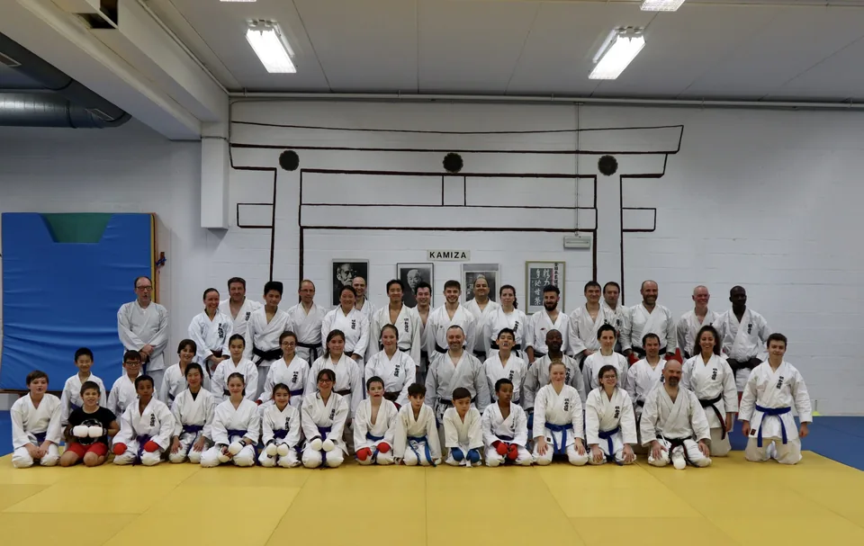
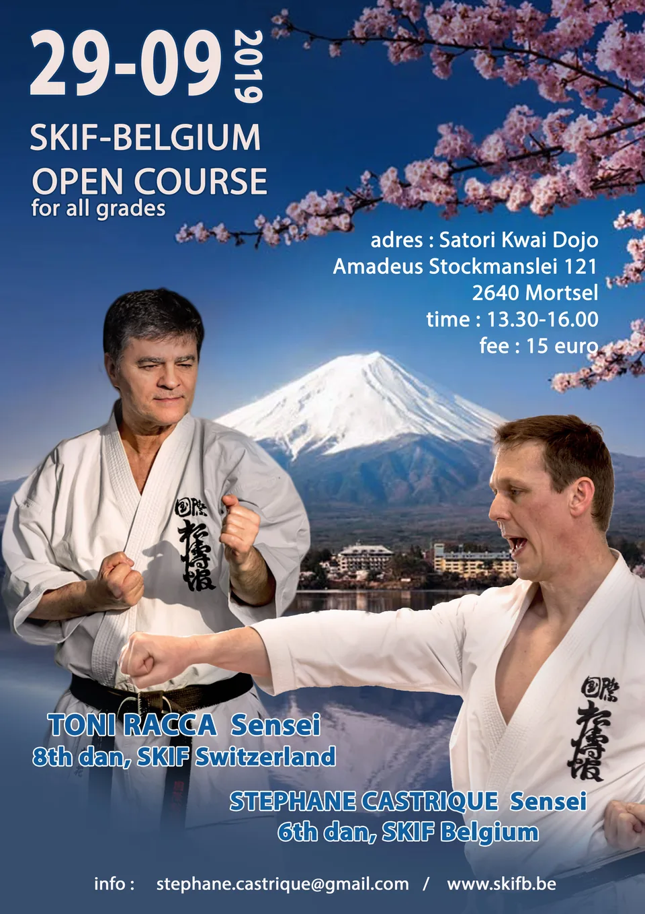

Condoléances
Le dojo présente ses condoléances après le décès de Kanazawa Soke, le 8 décembre 2019 à Tokyo.
Toute la vie du dojo, année par année. Les stages, les compétitions, les moments du club et les infos pratiques.
Le dojo présente ses condoléances après le décès de Kanazawa Soke, le 8 décembre 2019 à Tokyo.

Stage kumite du 03/11/2019 au dojo, mené par Hung Sensei (écrit « Hueng » dans l'article) et Julien Sensei.

Les podiums des athlètes du club à la Chikara Cup, compétition nationale du 13/10/2019.

Stage SKIF Belgium avec Toni Racca Sensei, de la SKIF Suisse, au Satori Kwai de Mortsel.
Les champions et championnes du club à la Rupel Cup 2019, compétition nationale.

Les champions du club au championnat national 2019.

Lieu, contact et lien du championnat national SKIF Belgium du 10/03/2019 au Sporthal Kattenbroek d'Edegem.

L'affiche du championnat national SKIF Belgium du 10/03/2019 à Edegem.
Aucun article de ce type en 2019.